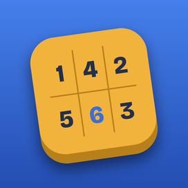
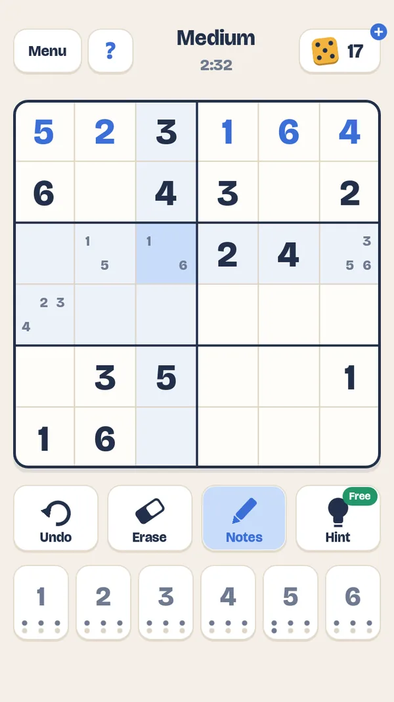
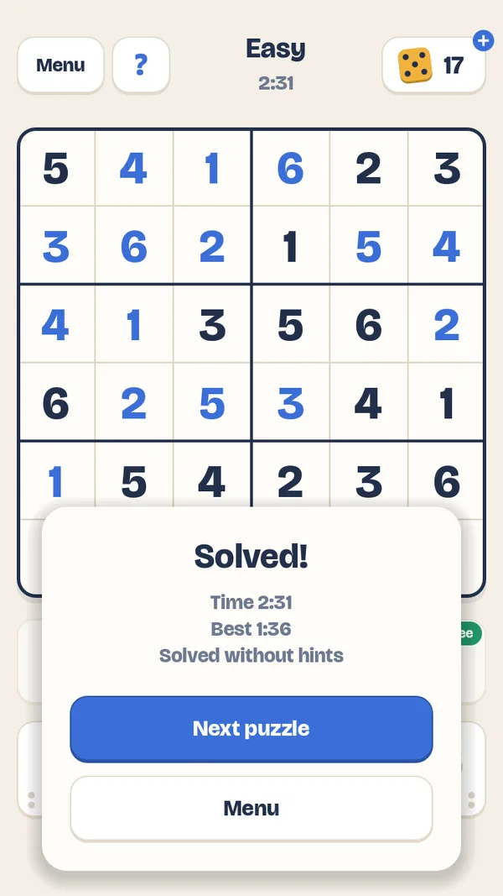
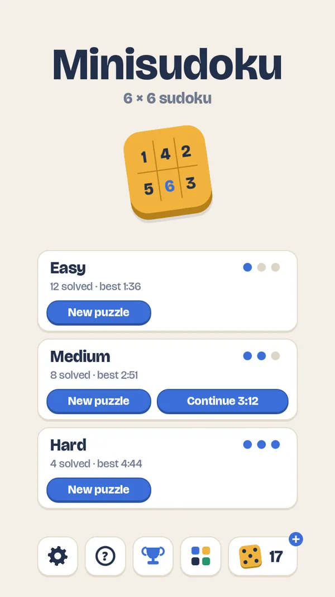

Minisudoku6 × 6 SUDOKU
Sudoku i en mindre og vennligere størrelse: et rutenett på 6 × 6 med tallene 1 til 6 og bokser på 2 × 3. Perfekt til kaffepausen, bussen eller en rolig stund før leggetid.
Sudoku in a smaller, friendlier size: a 6 × 6 grid with the numbers 1 to 6 and boxes of 2 × 3. Perfect for a coffee break, the bus or a calm moment before bed.



Små og rolige gåterSmall, calm puzzles
Lett, Middels og Vanskelig. Hvert brett har nøyaktig én løsning, og nye brett lages på telefonen hver gang. Ett brett i gang per vanskelighetsgrad – fortsett når du vil.
Easy, Medium and Hard. Every puzzle has exactly one solution, and new puzzles are made on your phone every time. One puzzle in progress per difficulty – continue whenever you like.
Feil blir rødeMistakes turn red
Tall som kolliderer i en rad, kolonne eller boks, blir røde med en gang. Notater for kandidattall og ubegrenset angring.
Numbers that collide in a row, column or box turn red right away. Notes for candidate numbers and unlimited undo.
Hint når du står fastHints when you're stuck
Ett gratis hint i hvert brett. Flere hint koster terninger, som du kan kjøpe i pakker – ingen abonnement.
One free hint in every puzzle. More hints cost dice, which you can buy in packs – no subscriptions.
Dine beste tiderYour best times
De raskeste tidene for hver vanskelighetsgrad, med dato og antall hint. Ingen konto, virker uten nett, på seks språk.
Your fastest times for each difficulty, with date and hints used. No account, plays offline, in six languages.